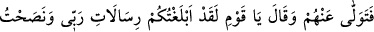
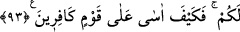

Hani bir minber ki birisi çıkıp
Bir münkirin zamanını ansın
Üstün olanın dostu ol ki üstün olasın
Kendine gel, ey azgın! Mağluplara dost olma
“Şuayb’i yalanlayanlar, işte ziyana uğrayanlar onlar oldular.” Bu cümle ile de
onların diğer sözleri karşılığındaki cezaları bildirilmektedir. Yani Şuayb (a.s.)’ı
yalanlayanlar, “Eğer Şuyab’a uyarsanız muhakkak ziyana uğrarsınız.” şeklindeki
sözlerine karşılık cezalandırılmışlar, dünya ve din bakımından ziyana uğrayanlar Şuayb
(a.s.)’a tâbî olanlar değil, kendileri olmuştur.
Şuayb (a.s.)’ın kurtarılması hakkında bu kadar açıklama ile yetinilmiştir. Nitekim Hûd
sûresinde de: “Emrimiz gelince Şuayb’ı ve onunla beraber inanmış olanları bizden
bir rahmet ile kurtardık...” (Hûd, 11/94) buyurulmuştur.
93. (Şuayb), onlardan yüz çevirdi ve (içinden) dedi ki: “Ey kavmim! ben size
Rabbimin gönderdiği gerçekleri duyurdum ve size öğüt verdim. Artık kâfir bir
kavme nasıl acırım!”
Şuayb (a.s.), kavmi helâk olduktan sonra “onlardan yüz çevirdi ve” onlara çok
üzülerek “dedi ki: Ey kavmim! ben size, Rabbimin gönderdiği gerçekleri duyurdum ve
size öğüt verdim,” Sonra bu sözü kendisine uygun bulmadı ve şöyle dedi: “Artık”
küfürlerinde ısrar eden “kâfir bir kavme nasıl acırım?” nasıl çok hüzünlenir, üzülür ve
gamlanırım? Çünkü onlar, küfürleri yüzünden başlarına inen bu azabı haketmişlerdi. Bu
sebeple onlar, hüzün duyulacak kimseler değillerdi. Yâhut da Şuayb (a.s.) bu sözü,
kavminin kendisini tasdik etmemesi ve kendisinin de onlara son derece üzülmesi
sebebiyle özür beyan etmek için söylemiştir.
Rabbimin emirlerini tebliğ ve kötü akıbetten korkutma hususunda çok gayret ettim.
Nasihat ve şefkatle yaklaşmak hususunda bütün gücümü sarfettim. Fakat siz benim
sözümü tasdik etmediniz. O halde şimdi size nasıl hüzünlenirim.
Mesnevî ’de denilmiştir ki:
Nasıl gamlanayım? Gam baş aşağı olmuş
Gam sizdiniz, ey inatçı kavim!
Ey Kur’an’ı doğru okuyan! Eğri okuma
Artık zalim bir kavmin ardından nasıl acırım!